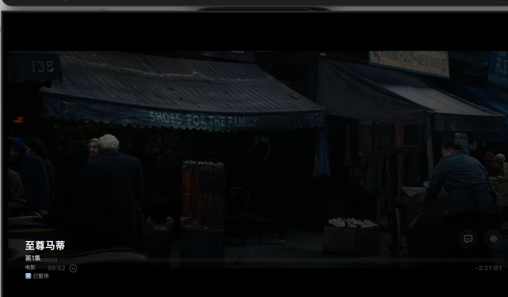
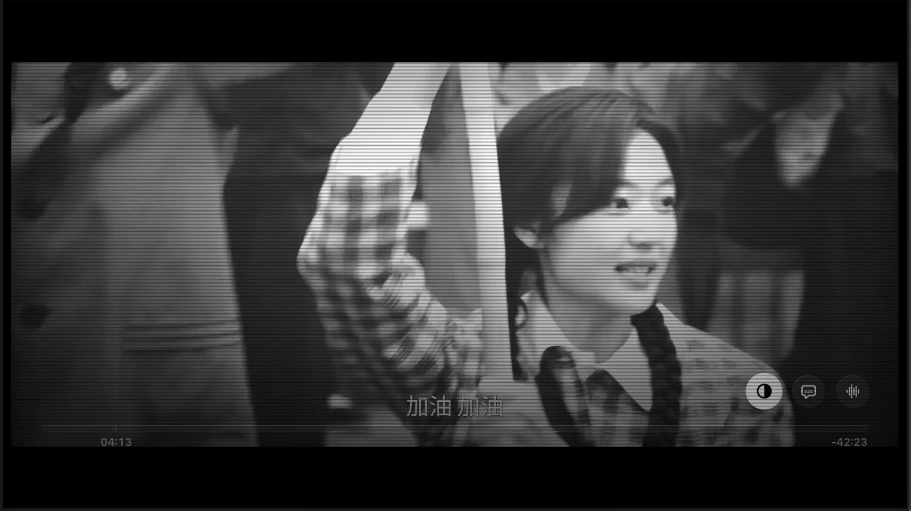
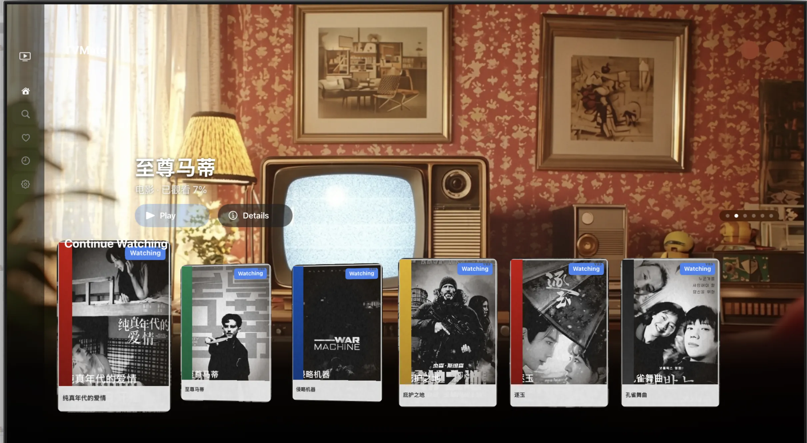
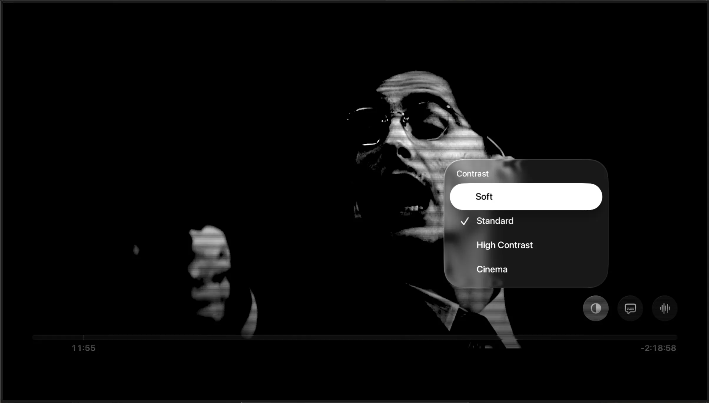
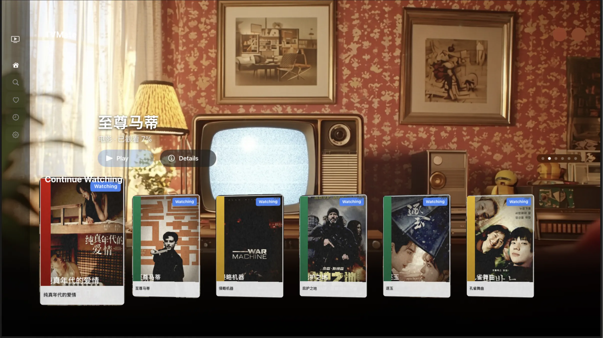
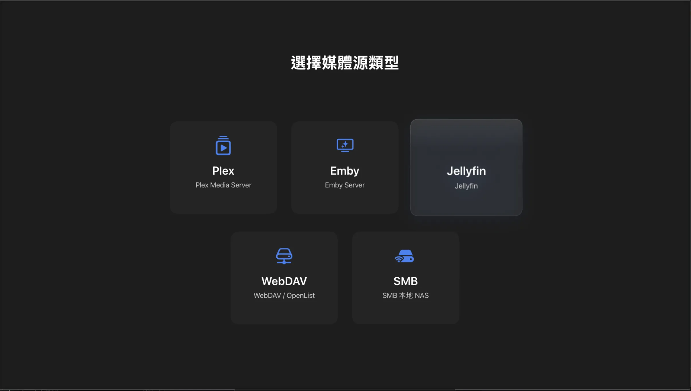
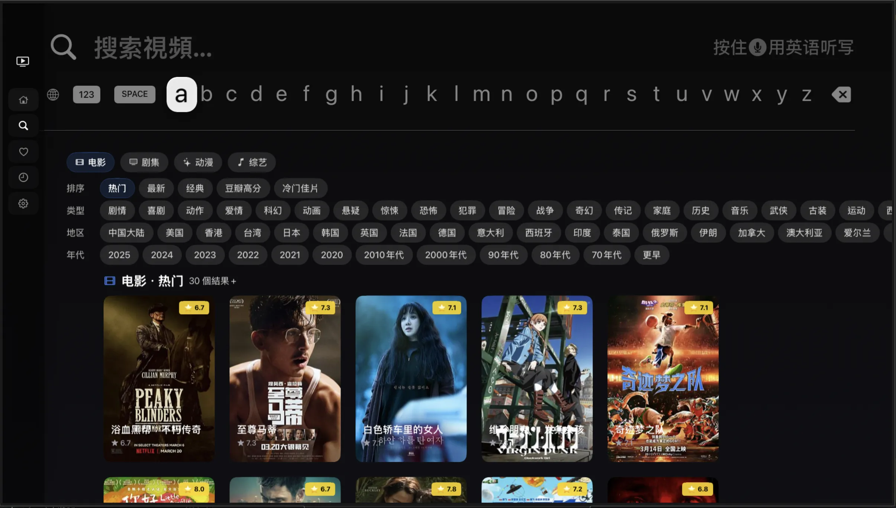
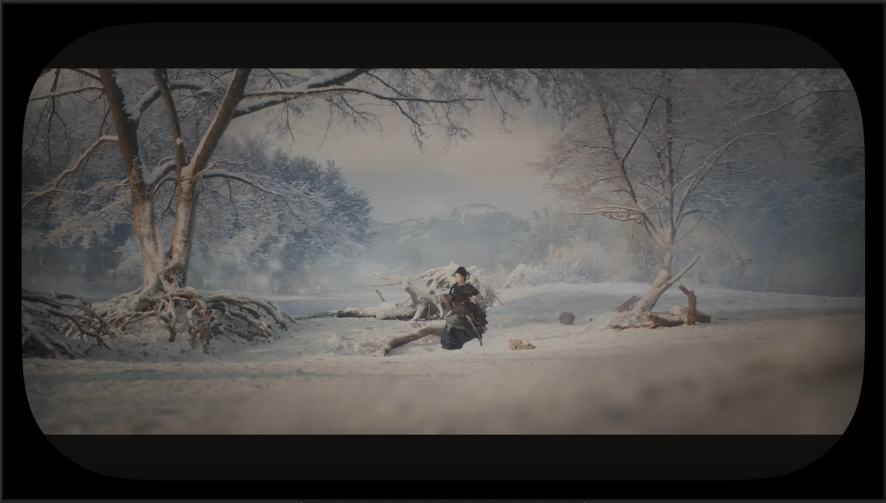
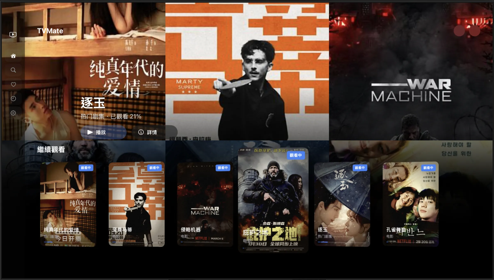
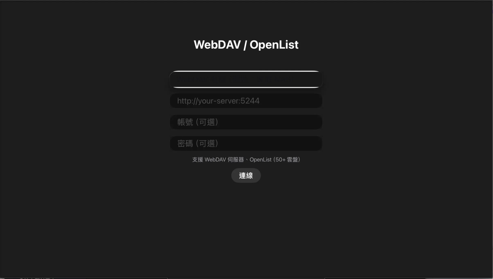

你的個人媒體中心，盡在大螢幕。
CRT 映像管效果 — 把客廳變回黃金年代的電影院
TVMate 內建 Metal GPU 即時渲染的 CRT 映像管模擬系統，為影片和整個 App 介面帶來真實的復古質感。五種預設模式，從微妙到極致，一鍵切換。
| 模式 | 效果描述 |
|---|---|
| 輕微 | 淡淡的暖色調與掃描線，日常觀影推薦 |
| 標準 | 經典 CRT 電視感 — 掃描線、螢幕曲率、磷光點、邊緣暗角 |
| 強烈復古 | 90 年代老電視 — 明顯曲率、厚重掃描線、色彩溢出、VHS 錄影帶盒風格介面 |
| 無聲電影 | 卓別林風格 — 黑白膠片、隨機刮痕與灰塵粒子、掉幀模擬（16fps 放映機感）、泛黃色溫 |


左：標準 CRT 模式，掃描線與暖色暗角。右：強烈復古，厚重掃描線與色彩溢出。
在「強烈復古」與「無聲電影」模式下，首頁海報卡片化身為 VHS 錄影帶盒 — 白色塑膠殼邊框、隨機品牌色帶（TDK 藍、JVC 紅、Kodak 黃、Fuji 綠、Maxell 紫、Sony 黑）、底部 Courier 打字機字型標題標籤，點擊時播放「開盒」3D 翻蓋動畫。

VHS 錄影帶盒風格 — 白色塑膠殼邊框搭配隨機品牌色帶。
首頁背景變身為懷舊客廳場景，搭配 CRT 電視開機影片，彷彿回到 VHS 租片年代。
為老舊低解析度影片注入新生命。可與 CRT 效果疊加使用（先升頻再套用復古濾鏡），智慧降級機制在偵測到掉幀時自動切換至 Lanczos。
| 模式 | 說明 | 硬體需求 |
|---|---|---|
| Lanczos | 高品質傳統演算法，穩定流暢 | Apple TV HD+ |

無聲電影模式 — 黑白膠片、刮痕粒子、16fps 掉幀模擬。
一個 App 管理所有影片來源 — 動態添加 / 移除媒體源，統一首頁呈現所有伺服器內容，連線狀態即時指示。
| 媒體源 | 說明 |
|---|---|
| Plex | 完整 Plex Media Server 支援，含 PIN 碼認證與資料庫瀏覽 |
| Jellyfin | 開源媒體伺服器，完整 API 整合 |
| Emby | 家庭媒體伺服器，完整支援 |
| WebDAV | 雲端硬碟存取（支援 OpenList 對接 Google Drive、OneDrive、Dropbox 等 50+ 雲盤） |
| SMB/NAS | 本地網路儲存直接存取 |

TVMate 主畫面 — 支援 Cinematic、Classic、PosterWall 三種輪播風格。
從所有媒體伺服器中搜尋，智慧去重 — 相同影片自動合併顯示。整合 TMDB 提供個人化推薦：自動匹配本地影片與 TMDB 資料庫、詳情頁顯示相似影片、首頁「為你推薦」區塊、豐富海報與演員元資料、快取機制提升瀏覽速度。


左：多源媒體管理介面。右：智慧搜尋與 TMDB 資料匹配。
基於 Apple AVPlayer 的高品質播放 — 從 HDR 到 Dolby Atmos 全面支援
一鍵收藏喜愛影片，獨立收藏頁面瀏覽。Premium 版一次買斷，永久移除廣告 — 無訂閱、無隱藏費用。

CRT 模式設定 — 五段可調，即時預覽效果。
| 風格 | 說明 |
|---|---|
| Cinematic | 全螢幕大圖 + 漸層文字覆蓋，Netflix 風格 |
| Classic | 上方海報清晰、下方背景模糊，沉穩大氣 |
| PosterWall | 3×2 海報拼貼牆，電影院櫥窗感 |

Cinematic / Classic / PosterWall — 三種風格，設置中隨時切換。
適用於 WebDAV / SMB 等資料夾式來源 — 樹狀資料夾導航、依檔案類型顯示圖示（影片、字幕、音訊、資料夾），點擊影片直接播放。
4 位數 PIN 鎖定 — App 啟動自動鎖定和內容分級過濾，為家庭觀影提供安心保障。

簡潔的連線設定介面 — 輸入伺服器位址即可開始使用。
繁體中文 — 完整本地化
English — Full localization
更多語言即將支援。
TVMate vs. 同類產品功能比較
| 功能 | TVMate | Infuse | VLC | Plex |
|---|---|---|---|---|
| CRT 映像管模擬 | ✓ | — | — | — |
| VHS 錄影帶盒風格 | ✓ | — | — | — |
| 影像升頻 | ✓ | ✓ | — | — |
| 多源聚合 | ✓ | ✓ | — | — |
| TMDB 推薦 | ✓ | ✓ | — | ✓ |
| Dolby Vision | ✓ | ✓ | — | ✓ |
| Dolby Atmos | ✓ | ✓ | — | ✓ |
| 家長控制 | ✓ | — | — | ✓ |
| 一次買斷 | ✓ | — | ✓ | — |
| 零追蹤隱私 | ✓ | — | ✓ | — |
✦ 資料來源：各產品官方網站，截至 2026 年 4 月 ✦